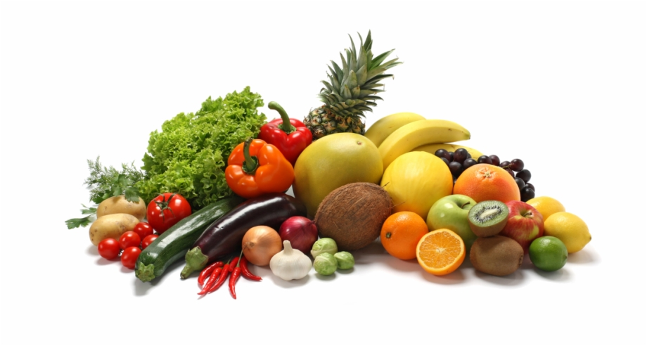
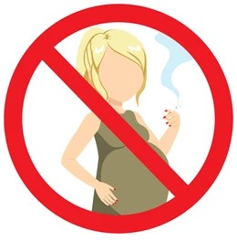

This age range is considered optimal for pregnancy due to increased fertility and lower complication risks.
Women in their 20s typically have healthier pregnancies with fewer medical conditions and smoother experiences.
Pregnancy in this period is associated with higher chances of successful conception, healthy fetal development, and positive childbirth experiences.
Individuals in their 20s have the energy and resources to cope with the demands of pregnancy, childbirth, and early parenthood.
It's the prime time to prioritize reproductive health, make informed family planning choices, and lay the groundwork for healthy pregnancies and parenting.
Nutrition
During pregnancy, it's important to maintain a well-balanced diet to ensure both the mother and baby receive adequate nutrition.
While there are certain foods that are generally recommended throughout pregnancy, specific dietary needs may vary slightly during each trimester. Here's a general guideline for foods to consider during each trimester:

Focus on nutrient-dense foods that provide energy and support the baby's final growth and development.
Increase intake of fiber-rich foods (such as fruits, vegetables, whole grains, legumes) to help prevent constipation.
Include foods rich in magnesium (such as nuts, seeds, whole grains, leafy greens) to support muscle function and bone development.
Consume sources of vitamin K (such as leafy greens, broccoli, Brussels sprouts) to support blood clotting.
Incorporate foods high in antioxidants (such as berries, nuts, seeds, colorful vegetables) to support overall health and immunity.
Stay hydrated by drinking plenty of water and consuming hydrating foods like fruits and vegetables.
Throughout pregnancy, it's important to listen to your body and make dietary choices that make you feel good. Consult with a healthcare provider or a registered dietitian for personalized dietary recommendations based on your individual needs and circumstances.
Exercise plays a vital role in maintaining physical and mental well-being during pregnancy. Incorporating short, effective exercises into your routine can help alleviate common pregnancy discomforts, such as back pain and fatigue, while also improving circulation, strength, and flexibility. From gentle stretches to low-impact cardio, these exercises are designed to support your changing body and prepare you for the demands of childbirth.
Discover the power of movement and embrace the benefits of staying active throughout your pregnancy journey.
Focus on exercises that support labor and delivery, such as prenatal yoga, Pilates, and gentle stretching.
Avoid high-impact activities and exercises that involve lying flat on your back.
Practice breathing techniques and relaxation exercises to prepare for childbirth.
Listen to your body and adjust the intensity and duration of exercises as needed.
Incorporate a variety of exercises to promote cardiovascular health, strength, and flexibility.
Engage in activities such as brisk walking, swimming, strength training, and prenatal Pilates or yoga.
Listen to your body and adjust exercise intensity as needed. Stay hydrated and avoid overheating.
Medication during pregnancy requires careful consideration to ensure the safety of both mother and baby. It's crucial to consult healthcare providers before taking any medication,
including over-the-counter drugs and supplements.Open communication with healthcare professionals helps ensure the healthiest outcomes for both mother and baby.
Medication safety considerations in the third trimester focus on avoiding drugs that may affect labor and delivery or pose risks to the newborn.
Always consult with a healthcare provider before taking any medication, even over-the-counter drugs or supplements, during this critical period.
Women in their 20s should carefully consider medication use during pregnancy, especially during the first trimester when the baby's organs are developing.
Consult with a healthcare provider to assess the safety of any medications, including prescription drugs, over-the-counter medications, and supplements.
Tips and advice are crucial during pregnancy, contributing significantly to a safe and happy journey for both mother and baby.
From maintaining a nutritious diet to practicing self-care and seeking regular medical check-ups, these recommendations ensure a smooth and healthy pregnancy experience.
By following these tips, expectant mothers can optimize their well-being and nurture a strong foundation for their baby's development.
Practice relaxation techniques and prenatal yoga to manage stress and prepare for childbirth.
Attend regular prenatal appointments and discuss birth preferences and options with healthcare providers.
Prepare for labor and delivery by packing a hospital bag, creating a birth plan, and arranging transportation to the hospital or birth center.
Keep track of fetal movements and contact healthcare providers immediately if there are any concerns or changes in fetal activity.
Women in their 20s should focus on establishing healthy habits and routines during pregnancy, including regular prenatal care and healthy lifestyle choices.
Take advantage of resources such as prenatal classes, support groups, and educational materials to prepare for childbirth and parenting.
Pregnancy brings unknown challenges, but with informed decisions and essential tips, it can be navigated safely. By avoiding potential hazards and adopting
healthy habits, expectant mothers can ensure a smoother, more enjoyable pregnancy for themselves and their babies

Avoid activities that require lying flat on your back after the first trimester, as it can restrict blood flow and cause dizziness or faintness.
Be cautious with over-the-counter medications, herbal remedies, and supplements, as some may not be safe for late pregnancy.
Avoid high-impact exercises and strenuous activities that may increase the risk of premature labor or injury.
Limit exposure to environmental hazards such as secondhand smoke, air pollution, and household chemicals that can harm fetal development.
Women in their 20s should prioritize avoiding harmful substances such as alcohol, tobacco, and illicit drugs during pregnancy.
Be cautious with medications and supplements, and always consult with a healthcare provider before taking anything during pregnancy.
Practice safe sex to prevent sexually transmitted infections that can harm the baby or affect pregnancy outcomes.